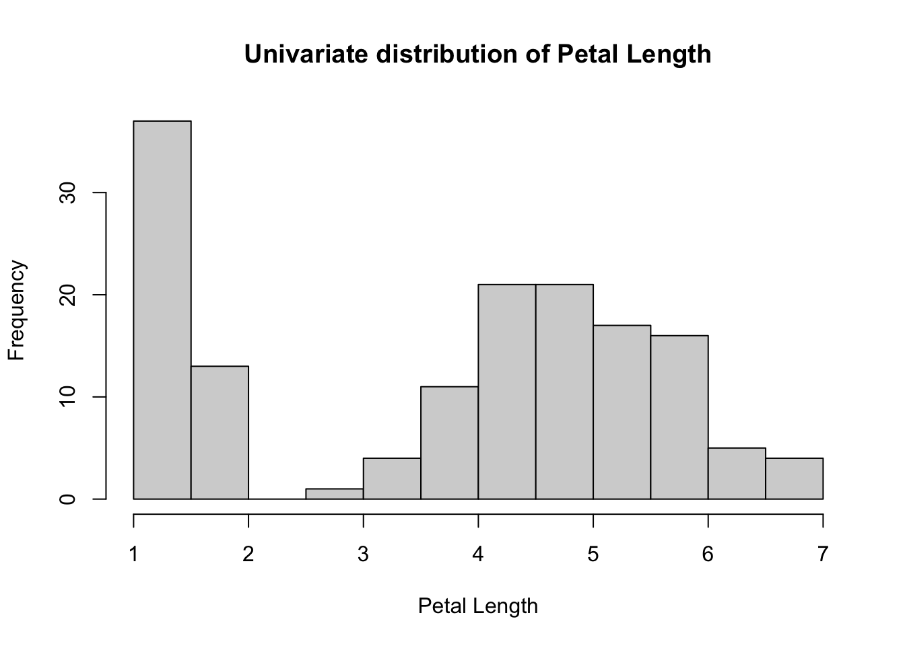
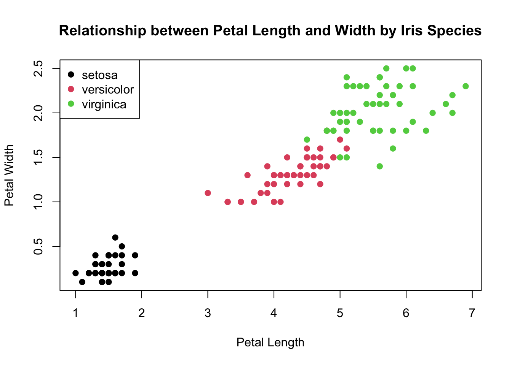
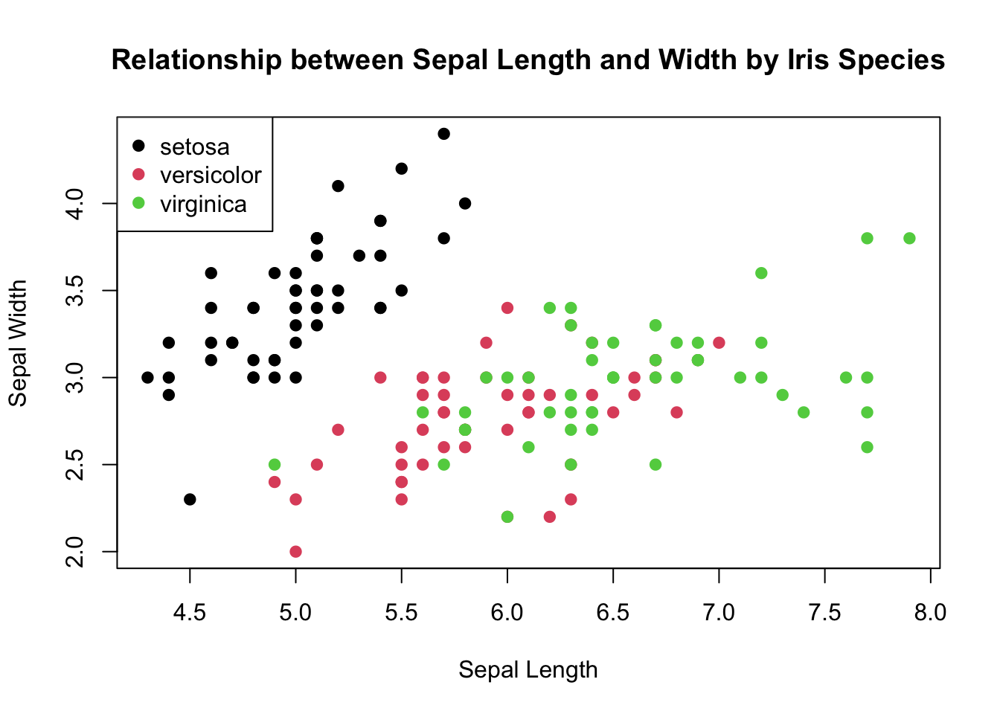

| Sepal.Length | Sepal.Width | Petal.Length | Petal.Width | Species | |
|---|---|---|---|---|---|
| 1 | 5.1 | 3.5 | 1.4 | 0.2 | setosa |
| 2 | 4.9 | 3.0 | 1.4 | 0.2 | setosa |
| 3 | 4.7 | 3.2 | 1.3 | 0.2 | setosa |
| 4 | 4.6 | 3.1 | 1.5 | 0.2 | setosa |
| 5 | 5.0 | 3.6 | 1.4 | 0.2 | setosa |
| 6..145 | |||||
| 146 | 6.7 | 3.0 | 5.2 | 2.3 | virginica |
| 147 | 6.3 | 2.5 | 5.0 | 1.9 | virginica |
| 148 | 6.5 | 3.0 | 5.2 | 2.0 | virginica |
| 149 | 6.2 | 3.4 | 5.4 | 2.3 | virginica |
| 150 | 5.9 | 3.0 | 5.1 | 1.8 | virginica |
CSSS508 Homework 1 Example
I’m interested in exploring a dataset from base R called iris. From its documentation I see that it is data about 50 flowers from each of 3 species of iris and their respective measurements of sepal length, sepal width, petal length, and petal width.
I first want to take a look at a preview of the dataset by making a nice table.
The mean petal length is 3.758 but its median petal length is 4.35. It’s range is 5.9 which additionally suggests a certain degree of spread.
It might be useful to look at the distribution to gain a better sense of the variation of this variable.

There seems to be a cluster of much smaller petals and then another cluster of average to bigger petals. I wonder how this varies by species…?

We can see from this plot that the overall mean and median of petal length is quite misleading! Only the verisicolor species of iris is close to those values while setosa is much mush smaller and virginica is a bit bigger.
Is there a similar thing happening for sepal length and width? Let’s look at some basic descriptives of the dataset.
| Sepal.Length | Sepal.Width | Petal.Length | Petal.Width | Species |
|---|---|---|---|---|
| Min. :4.300 | Min. :2.000 | Min. :1.000 | Min. :0.100 | setosa :50 |
| 1st Qu.:5.100 | 1st Qu.:2.800 | 1st Qu.:1.600 | 1st Qu.:0.300 | versicolor:50 |
| Median :5.800 | Median :3.000 | Median :4.350 | Median :1.300 | virginica :50 |
| Mean :5.843 | Mean :3.057 | Mean :3.758 | Mean :1.199 | NA |
| 3rd Qu.:6.400 | 3rd Qu.:3.300 | 3rd Qu.:5.100 | 3rd Qu.:1.800 | NA |
| Max. :7.900 | Max. :4.400 | Max. :6.900 | Max. :2.500 | NA |
It’s interesting to note with the summary function that for numerical data it’ll calculate the classic 5 statistics used to construct a boxplot plus the mean but for a categorical variable like iris$Species it returns the frequency of each value of the variable.
The distribution of sepal length looks wider than sepal width, similar to how it was for those measurements of the petals. Let’s see how sepal length and width relate to one another graphically.

There are still clusters by each species type but for verisicolor and virginica there’s much more overlap. Overall, there’s tighter clustering by species for the petal length and width than there is for the sepal length and width.